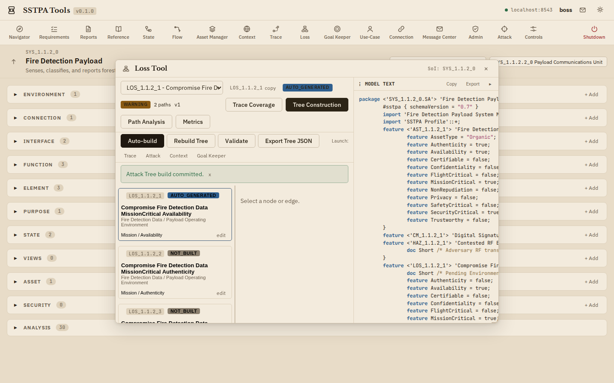
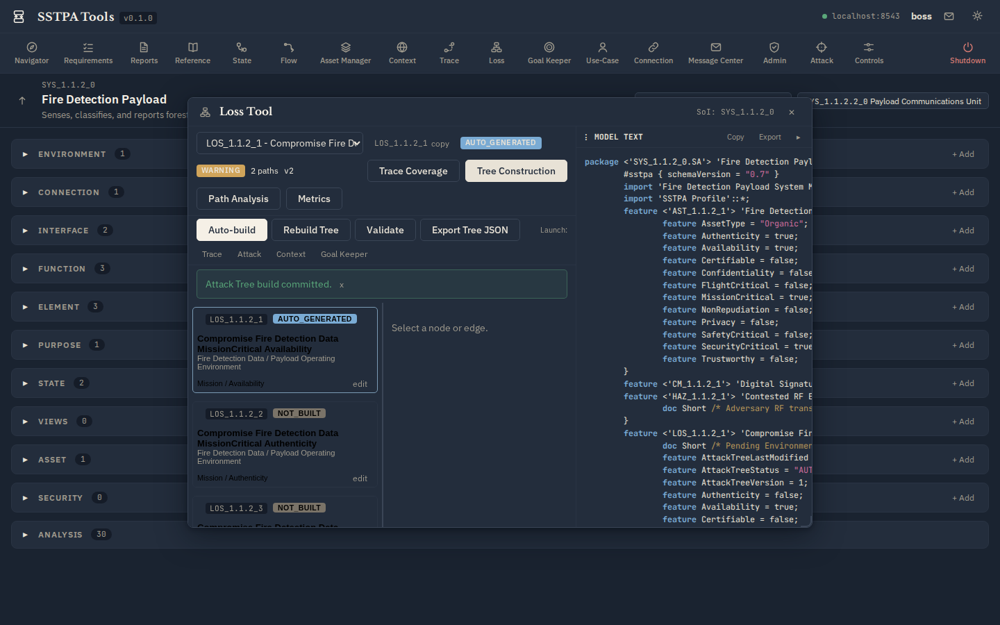

Add-on Tool · Step 12
Loss Tool
Construct Structured Attack Trees for a single Loss. Auto-build from Trace, State, Attack, and Context inputs; enumerate paths; manage residual vulnerabilities; attach Countermeasures. Prerequisite: Loss allocated to an Environment in Context.
FireSat: select a LOS_* such as Compromise Fire Detection Data … Availability, then Auto-build / Tree Construction.
Light (parchment)

Dark (bluish-grey)
